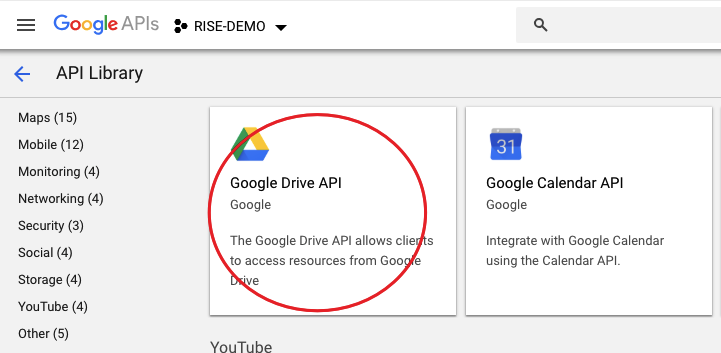
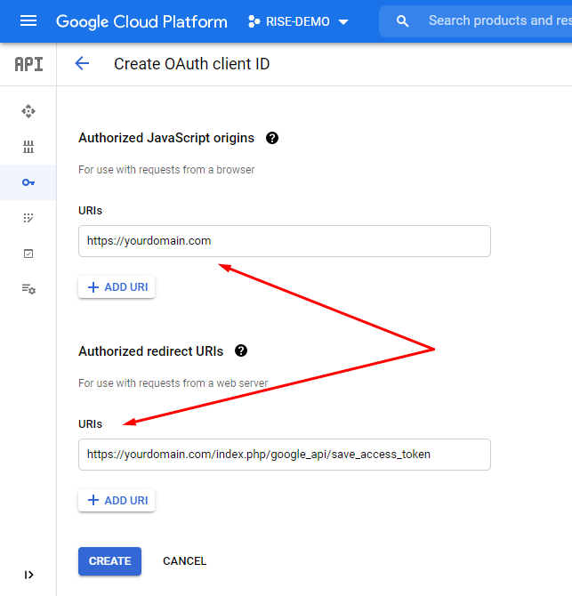
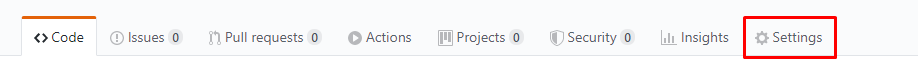

Quick Start Guide
- Add your customers by going to the Clients view. You can access any view by clicking on the menus from the left sidebar.
- Add your projects from the Projects view. Once you have created any project you are ready to add tasks, mile stones, files, comments, notes and invoices to the project. If you would like to track the time of your project, simply you can use the start timer button located in each project details view.
- Do you have a team and you want to collaborate with them? You can invite or add manually your team members from the Team members view. Once you've added the team members then you can add the members in your projects, assign them to tasks, send messages, share ideas and files, store their personal, social and work information, etc.
- Do you want to track attendance or daily time reporting of your team members? This application makes easy to time reporting. The team members can report the daily time cards by using the Clock In and Clock Out button located in dashboard. They can also submit the leave applications for their absences.
- You can create invoices and send the invoices to your clients from the Invoices view. Make sure you have configured your email settings before sending any email.
- Do you interested to provide a smart support to your customers? There is a client portal in this application. Your clients can login to the client portal and submit their support tickets. You can easily manage the tickets from the Support tickets view.
- To make this application more suitable to you please have a look at the Settings page and change the settings according to your needs.
To learn more about the application please check all parts of this documentation. In this documentation, we'll describe different parts according to the screenshots.
Installation
Server Requirements
- PHP v7.3+
- MariaDB/ MySQL
- MySQLi PHP Extension
- Latest cURL PHP Extension
- Latest mbstring PHP Extension
- Latest OpenSSL PHP Extension
- Latest GD PHP Extension
- Latest intl PHP Extension
- Latest json PHP Extension
- Latest mysqlnd PHP Extension
- Latest xml PHP Extension
- zlib.output_compression should be disabled in php.ini
- date.timezone setting in php.ini (Set any timezone in date.timezone. Ex: date.timezone = "America/New_York" )
Quick Installation Guide
- Unzip the RISE-Ultimate-Project-Manager.zip which you have downloaded from the Envato Market.
- Upload the files to your sever using any FTP client.
-
The file structure should be look like this:
- /app
- /assets
- /documentation
- /files
- /install
- /system
- /updates
- /writable
- /index.php
-
Create a MySql Database via your web hosting providers Control Panel (e.g. cPanel). Once you have created the database, remember the following information:
- Database Name
- Database Username
- Database Password
- Open your web browser and enter the url (http://yourdomain.com or http://yourdomain.com/foldername) in the address bar.
- If everything is ok, you should get the installation page.
- Follow the instructions and click on the Next button. Then enter the database details which you have collected earlier. Finally, enter your name, email and password which will be required to login in the application. Then click on the Finish button and wait a while. The system will create necessary tables in database, files and configuration.
- That's all! After completing the installation delete the installation folder and login to your dashboard.
Features
- Easily accessible UI
- Dashboard customization
- Project management
- Client management
- Team management
- Team conversation
- Private messaging with team members and clients
- Tasks, milestones, gantt, notes, files and customer feedback
- Project timesheet and time tracker
- Drag and drop facility for files
- Custom Fields
- Quick add from topbar
- Custom language selection for all user
- Web and email notifications
- Push notification
- Client portal
- All reports of any client in a single page
- Informative profile page for client contacts
- Estimate requests
- Estimates
- Support tickets
- Email piping for tickets
- Invoice management
- Invoice pdf, online payment (PayPal and Stripe)
- Expense & payments report
- Custom role (permissions) for team members
- Event calendar
- Private notes
- Customizable email templates
- Timecard/attendance management
- IP restriction for timecard entry
- Leave management
- Team member's details view
- Announcement/notice management
- Report printing and export
- Dynamic graph and visual report
- Activity logs for projects
- Install updates in a click
- Enable/Disable modules
- Help & Support
- Google Drive Integration
- Bitbucket Integration
- GitHub Integration
- Fully responsive on devices
- Codeigniter 4.0.4
- Bootstrap 5
- And more...
Dashboard
You can create or customize your dashboard as like as you want.
Create a new custom dashboard using the Add new dashboard button from the dropdown in your default dashboard.
Customize dashboard
- There has several widgets for your dashboard. You can drag the widgets to dashboard editing rows from here.
- You can add as many rows as you want with desired columns by clicking this button.
- If you want to see the preview of the widget, you can simply click on this button.
- To remove the entire row, use this button. The widgets on the deleted row will be back to the widgets container. So, you can use those widgets again if you want.
- If you want to save the dashboard without leaving the editing panel, you can use this button.
- This button will save the dashboard and move you to your newly created/edited dashboard.
Dashboards list
- Quick navigation for your dashboards containing selected colors.
- This is your dashboards list. Please note that, the dashboards here are sortable. You can easily move up/down them except Default dashboard.
Extras
If you'll lost control or access to your selected widget(s), then those will show like the images below.
-
In view mode.
-
In edit mode.
Top navigation bar
- You can toggle your side navigation bar with this icon.
- This will move you to your To do list.
- You can see your Starred projects dropdown here.
- You can see your Starred clients dropdown here.
- Here is your Dashboards dropdown.
- This is the Quick add button. You can easily add anything with this like tasks, multiple tasks, events, tickets and more.
- If you want to set a language only for your own, then this will take care. You can also set this from your Preferences.
- This is your Notifications list.
- This is your New messages list.
- This is your Profile info dropdown. You can go to your profile, sign out, change password or select custom theme from there.
Clients
You can create and manage your customers in clients section.
List of Clients
- Create new client using the Add client button.
- Search the existing clients which already added in this application.
- To see the details information of the client click on the Company name link.
- If you need to edit the client's information you can do it using the edit button.
- To delete the client use the delete button. Once you click on the button, the system will delete the client and you will have a chance to undo the action within 10 seconds. If you don't undo the action, the system will delete the client permanently and you will not be able to revert the client anyway!
- If you want to save the clients list in Excel file, you can simply click on this button and the visible clients in the table will be exported.
- If you need to print the clients list, click on the print button.
- You can define the rows per page of the table from here.
- You can filter the clients with your desired client groups.
Add new client
- The company name is an organization you or your organization works for. Even if your client is a person you have to add the information as a company. After creating any client you can add contacts of that client.
- You can define different currency for different clients. It's useful when you are working with a foreign client which currency symbol is different from your default currency symbol. By default the invoices of the client will be generated using the default currency symbol if you don't define any currency symbol with that specific client.
Client Details
- The contacts tab contains the list of contacts of the client. You can add one or more contact by clicking on the Add contact button.
- To send an invitation to any user for the client, use the Send invitation button.
- Client info tab contains all the informations of the client. You can check/edit the informations from here.
- Projects tab contains all projects of the client.
- Invoices tab contains all invoices of the client.
- Payments tab contains all payments of the client.
- Estimates tab contains all estimates of the client.
- Estimate Requests tab contains all estimate requests of the client. Which are requested from client or added by team members.
- Tickets tab contains all tickets of the client.
- Notes tab contains your personal notes with the client. Please note that, this won't be visible to client.
- Files tab contains your personal files with the client. This also won't be visible to client.
- Events tab contains all of your events with the client.
- To delete any contact from the client, use the delete button. Once you delete any contact you can undo the action within 10 seconds. If you don't undo the action the contact will be deleted from the client permanently and the contact will not be able to login in the client portal.
Projects
You can create and manage your projects here.
List of Projects
- Create new project using the Add project button.
- To see the details information of the project click on the project title link.
- By default the deadline color is black. If the deadline expires by today then the deadline color will be changed to orange and all expired deadline will be red color for non-completed projects.
-
The progress bar indicates the total progression of the project. To generate this progress bar, we calculate the total completed and non-completed tasks. The tasks points are important to calculate the progression.
Example: If there are 10 tasks with 1 point in each tasks, the project's total point will be 10. Whenever 5 of the tasks gets completed (Task status = Done), the total progress of the project will be (5*100)/10 = 50%.
Same logic applied on the milestone progress bar. - To filter the projects quickly, you can click on the status dropdown. From there, it's possible to see multiple or single status's projects.
- You can filter the projects by deadline from here.
- You can filter the projects list by the given labels of projects from here.
Project Details
- To track the project time you can use the Start time button. Once you click on the Start time button the timer will be turned on. When you want to stop tracking the time you have to click on the Stop timer button.
- You can edit, clone or change the status of project from the options dropdown.
- The project progression chart represents the total progression of the project.
- You can see the total tasks status of the project from the chart.
- Activity timeline represents the project history.
- To add new member in this project, click on the Add member button and select the user.
Tasks
- Create new task using the Add task button.
- You can use this check-box to make a task as done by instantly.
- Suppose you want to change milestones, assigned to, status or other informations for multiple tasks. Then you can simply use this Batch update button. After clicking on this, a selection panel will be appear just beside the tasks. After choosing your desired tasks, click on the Batch update button. Then a modal window will be open. From there, you could select and change which fields you want to change.
- If you want to add multiple tasks without leaving the modal, use Add multiple tasks button.
- To change the task status easily, you can use this.
- To see the details information of the task, click on the task title link.
Milestones
- Create new milestone using the Add milestone button.
- When all tasks of the milestone will be completed, the milestone's color will be Green.
- If the milestone's deadline is expires by today and there has non-completed tasks with this, then the color will be Red.
-
The progress bar indicates the total progression of the milestone. To generate this progress bar, we calculate the total completed and non-completed tasks with the associated milestones. The tasks points are important to calculate the progression.
Here applied the same logic which to generate project's progress bar.
Customer feedback
You can easily receive customer feedback from your client or you can add a customer feedback to your client.
Estimates
You can create and manage estimates from the Estimate List under Estimates menu. Only admin and allowed team members can access the Estimates page. And the clients can see only their own estimates. Admin can define the role of a member to access the estimates.
On the estimate's details page, you can add as many items as you need like invoices.
When you sent an estimate to your client, the client or you can accept/reject it. After accepting the estimate, you can easily create invoice or project from the Actions dropdown.
Estimate requests
In this application, you or your clients can easily create or manage Estimate requests. This is located under Estimates menu.
To create an estimate request, first you've to create a Form from Estiamte Forms under Estimates menu. You can create as many forms as you want. Which forms you'll mark as public, will be available to any user even whose are logged out from the app.
Then you can request an estimate by selecting your desired form and filling out. Client's also could do the same.
After getting/submitting estimate request, you can easily add Estimates from there or change the status of the estimate request.
Invoices & Payments
You can create and manage your invoices from the Invoices menu.
List of Invoices
- Create new invoice using the Add invoice button.
- To see the details information of the invoice click on the invoice id link.
- The invoice status represents the different states of the invoice. By default any invoice will be create with Draft status. Once you sent the invoice to the client then the invoice status will be changed to Sent. Once you receive any payment the invoice status will be changed to Fully paid or Partially Paid. When you cancelled the invoice then the invoice status will be Cancelled.
-
There could be many invoices with different clients. And the currency of the clients could also be different. With this filter, you can easily see your selected currency's invoices.
Please note that, this filter won't be visible if there is only a single currency used for all clients.
Invoice Details
- To add any item/product in the invoice, click on Add item button.
- If you want to edit the inserted item, you can click on the edit button of invoice item row.
- By clicking on delete button in invoice item row, you can delete the item from the invoice.
- To send a pdf copy of the invoice to the client, click on the Email invoice to client menu.
- You can download a pdf version of the invoice using the Download PDF menu.
- If you want to see the invoice pdf instead of download, you can simply use the Invoice Preview menu.
- You can print the invoice instantly using the Print invoice menu.
- To edit any information in the invoice click on the Edit invoice menu under the Actions dropdown.
- To make the invoice as cancelled, you can use Mark as cancelled menu. After clicking on the menu, a confirmation modal dialog will be appear. If you confirm from there, this action can't be undone and the invoice will mark as cancelled.
- By clicking on the Add payment button you will get a modal to add payment in the invoice.
- You can add Discount in the invoice from here. You can add this after/before tax with a fixed amount/percentage.
Expenses
In this application the expenses are located in under the Finance menu. Click on the Expenses menu to access the expenses page. Only admin and allowed team members can access the Expenses page. Admin can define the role of a member to access the expenses.
The expenses view represents a list of expenses. Admin can add new expense categories from the Settings section.
Support Tickets
In this application you can create any support ticket on behalf of your client or client can create any support ticket for himself.
List of Tickets
- Create new ticket using the Add ticket button.
- To see the details information of the ticket click on the ticket title link.
- You can filter the tickets list with the created date from here.
- You can filter the tickets list by the given labels of tickets from here.
- If you want to see a specific team member's tickets, then you can simply use this filter.
- If there is no member assigned with the ticket, you can assign to yourself in this ticket instantly by clicking this option from dropdown menu. Please note that, this will only be visible if there is no member assigned with the ticket and you can assign to the permitted members by editing the ticket anytime.
Team Members
Using this application you can manage your team members easily.
There are two views for team members.
- Whenever you want to add a new team member in this application, you can send invitation to the users email. The user will get an email with the signup instructions.
- Instead of sending invitation to the team members, you can add any team member manually, using the Add member button.
- To view the details of any team member, click on the view details link.
Team member's Details
In team member’s details view, you can see the details information about any member at a glance.
- The Timeline tab represents all the posts of the member.
- You can view or update the basic information of the member from the General Info tab.
- Manage social links from the Social Links tab.
- You can manage the login or access role from the the Accounts settings tab.
- The Job info tab represents the job title, salary and the other job related information.
- To see the details list of the member's attendance, check the Time cards tab.
- From the Leave tab, you can see the details leave history for the team member.
Messaging
All team members can send message to any team member. There are no restrictions to send messages for member to member.
Admin can control the messaging rule between team members and clients. From the Client settings, admin can set who can communicate with the clients. Only the selected members will be allowed to send/receive message to/from the clients.
Whenever you receive any new message, a notification icon will be appeared in the top right section in the application.
Events & Notes
Events
The events page represents a calendar with all events. You can add new event in the calendar. Click on the calendar date to add any event on that specific date. You can define different colors for different events to make the view easier to see.
By clicking on any event, you can see the details information about that event.
Notes
There are two kinds of note in this application. In dashboard, you can save any quick note in Sticky Note. In this application all notes are private (Only you can see your notes).
There are other notes in the Notes page. You can add any private note here. If you add any note in any projects that notes also will be appeared in the notes list.
Timeline
Timeline is a collaboration/conversation area of the team members. All team members can see this view. It's a best place to share any idea or files among the team members.
To share any file you can click on Upload File button or drag and drop files on the box. By default all file types are not supported to upload in the application. Admin can set the settings of accepted file formats in General Settings section.
Time Cards
The time cards section represents the attendance or total time log of each team members. Any team member can start clock from the dashboard by clicking on Clock In button. Once he/she clicks on the Clock In button the timer count starts. After clicking on the Clock Out button the timer stop counting the time for the team members.
Admin or allowed members can add time manually for any team member.
If admin wants to set any IP restriction for this module then he/she can set the allowed IP addresses in the IP Restriction Settings Section Under the Settings menu. Admin users are not applicable for this restriction. The admins are allowed to access the time card Clock In/Out from any IP address. The system will check the IP address of the non-admin team members.
Leave
This application allows the leave management facility for the team members. The team member can apply for leave and the admins or superiors can approve/reject the leave application. Admins and superiors can also assign leave for subordinates. Admin can create various leave types from the Leave types Setting.
- Apply a new leave using the Apply leave button.
- Admins or allowed members can assign leave for team members using the Assign leave button.
- To see the details information of the leave, click on this icon. From there, allowed members can approve/reject the leave. Please note that, once it'll be approved/rejected this operation can't be undone or change.
- All applications tab contains all of the leave applications.
- Summary tab contains the yearly summery chart of approved leave applications.
Announcements
This application provides the announcement publishing feature. The admins and selected team members can create new announcement for team members and/or clients.
The published announcement will be appeared in dashboard of each user. Once the user clicks on the announcement then it will not be appear in dashboard again. But the users can see the announcement from the Announcements menu anytime.
Settings
The application has various types of settings to make suitable according to your work. Here are some basic introductions about the settings.
General Settings
- General: In this section, you can change the application logo, title, localization settings, file type restriction and the item purchase code.
- Email: This setting is for out-going emails. All emails will be sent using the settings. You can use either the default mail sending method of your server or SMTP.
- Email templates: The application has some default email templates which are using to send different emails. You can change the appearance of the email templates as you like.
- Modules: You can enable/disable your desired modules from here.
- Cron Job: This setting has a broad description. Please check this.
- Notifications: This setting has a broad description. Please check this.
- Integration: You can integrate some cool APIs from here. Please check integration tab from menu for explained description.
- Updates: Please check this for upgrading guide.
Access Permission
- Roles: It's a setting to set different access permission for different users. To add any role click on the Add role button. Once you create any role then you can set permission to the role by clicking on the role. You'll see different types of access permission and you can choose in your own way. After defining the roles you can set the role to any team member. Each team member can have one role at a time. By default all team members has the Team Member role. To change the role of any team member, go to the team member’s details view and click on the Account settings tab and choose your desired role for the member.
- Team: You can create teams with your team members. So, you can assign role on several team(s), share events and much more.
- IP Restriction: If you would like to prevent accessing the Clock In/Clock Out of Time card from unauthorized IP, you can add authorized IP address here.
Client
- Client permissions: In this area you can control the client login/signup and the message sending rule between client and team members.
- Client groups: Here you can create client groups. So, you can easily choose your desired client groups with your clients.
Setup
- Custom fields: You can create custom fields for various items as your wishes. There has 8 types of field type. You can also give permissions to them that, if they will show on tables or not and visibility to users. Then they will appear on add/edit item screens and tables according to the permissions.
- Tasks: You can create task status from here. Then you can select the task status from the add/edit task screen.
- Events: You can enable Google Calendar API for per users from here.
- Leave types: You can create various leave types from here.
- Tickets: You can create various ticket types and modify ticket settings from here. For IMAP integration, please check this.
- Expense Categories: There could be various expense types in your business; you can add the types here.
- Invoice: There has some invoice settings to make things ease. You can change your invoice logo, invoice style, invoice reminders and more.
- Payment Methods: To receive any payment through invoice the payment methods are required. Add your required payment methods in this section.
- Company: You can setup your company informations from here. Then it'll be available on Invoices and Estimates.
- Taxes: In this application the taxes are using in Invoices and Estimates. You can define different taxes name and percentage here.
Cron Job
Please follow these steps to enable cron job in your cPanel:
-
Go to your cPanel and locate Cron Jobs under ADVANCED tab.

-
You'll find a form like this.
- Select which intervals of Cron Job you want.
-
Go to RISE Settings>Cron Job.
- Copy the required command from there and add to the form.
Note: Cron Job is must necessary if you enable anything which contains a tooltip "Cron Job is required for this action!".
Notifications
You can customize the app notifications. Please have a look at Settings>Notification setting. There are options for email and web notification for all events. You can enable both or as you prefer.
Please make sure you are using latest version of OpenSSL. You can check the OpenSSL version and released date in your server from phpinfo. If you don't know how to check the phpinfo just add a php file (phpinfo.php) in your server inside the RISE directory: Then browse the file from your browser. Like as http://yourdomain.com/phpinfo.php. If you can't update the OpenSSL, please contact to your hosting service provider.
Please also keep in mind that you'll not get notifications for your own actions.
Google Drive Integration
You can integrate Google Drive API as an extra cloud storage, from Settings>Integration>Google Drive. There has some easy steps.
-
Go to the Google API Console and Create a project.
-
Select your project (1) and click on Enable APIs and Services (2).

-
Search for Google Drive API and select that.
 -
Enable the API.
-
Now you've to create the credentials. To create this, go to the API's description page.

-
Select this options from here and click on the What credentials do I need? button.
-
Then you'll get a popup dialog box. Set up OAuth consent screen. Click on Set up.
-
The OAuth consent screen form will be appear then.
In Publishing status, there has two option. Production and testing.
Production: Your site should be HTTPS for this mode.
Testing: You can use any security protocol (HTTPS/HTTP) in testing mode. But you'll get an another page on authentication for this, which is mentioned in point 13.
-
Click on EDIT APP button and fill up with your desired information.


-
Click Save and continue button on Scopes and Test users step. And click Back to dashboard from Summary tab.
Click on the Credentials tab now from left panel. Click on Create credentials button and select OAuth client ID.

-
Select Web application for Application type. In 'Authorized redirect URIs', you should add this url https://yourdomain.com/index.php/google_api/save_access_token. You'll find this in your integration setting.
 - After saving, you'll get the Client ID and Client Secret. Add them to RISE and click on Save & authorize.
-
If you've selected Testing mode in point 8, you'll get this option. Select Continue from here.

- On retrieving from API access, please make sure that, status of Google Drive is showing Authorized.
That's all! On future, all files will be uploaded into Google Drive.
Google Calendar Integration
You can integrate Google Calendar API to sync events between your Google Calendar and Events on this app. There has some easy steps to setup.
- First, enable Google Calendar API from Settings>Events. After enabling this, every users can integrate with their own Google Calendar who have access to the Events module on the app.
-
To integrate, go to the Google API Console and Create a project.
-
Select your project (1) and click on Enable APIs and Services (2).

-
Search for Google Calendar API and select that.
-
Enable the API.
-
Now you've to create the credentials. To create this, go to the API's description page.

-
Select this options from here and click on the What credentials do I need? button.

-
Then you'll get a popup dialog box. Set up OAuth consent screen. Click on Set up.
-
The OAuth consent screen form will be appear then.
In Publishing status, there has two option. Production and testing.
Production: Your site should be HTTPS for this mode.
Testing: You can use any security protocol (HTTPS/HTTP) in testing mode. But you'll get an another page on authentication for this, which is mentioned in point 14. -
Click on EDIT APP button and fill up with your desired information.


-
Click Save and continue button on Scopes and Test users step. And click Back to dashboard from Summary tab.
Click on the Credentials tab now from left panel. Click on Create credentials button and select OAuth client ID.

-
Select Web application for Application type. In 'Authorized redirect URIs', you should add this url https://yourdomain.com/index.php/google_api/save_access_token_of_calendar. You'll find this in your integration setting.

- After saving, you'll get the Client ID and Client Secret. Add them to RISE at Events>Google calendar settings modal and click on Save & authorize.
-
If you've selected Testing mode in point 9, you'll get this option. Select Continue from here.
- You'll get your own calendar events always. And you can add any Special calendar (like Holidays Calendar). To get Special calendar's ID, click on the ⋮ icon just beside the Calendar name and select the Settings from the dropdown. Then you'll find the Calendar ID in the settings page.
- On retrieving from API access, please make sure that, status of Google Calendar is showing Authorized.
That's all! You've successfully integrate with your Google Calendar.
Note: After integration, any addition/modification/deletion will effect your Google Calendar instantly. If any of these will happen in your Google Calendar, Cron job will grab those changes and add to RISE. If you will add any Special calendar, you can edit/delete those events from RISE but it won't effect your Google Calendar.
IMAP Integration
You can setup an email address to create the tickets automatically when you receive any emails at that address. To active this, please fill up the necessary informations at Settings>Tickets>IMAP settings.
Please make sure that, your IMAP access is enabled on your email and after authorization, status of IMAP is showing 'Authorized'.
Note: The system will create tickets based on the unread emails. After creating the ticket, the emails will be marked as read. To get the replies in the same tickets, the system will check the ticket ID in the email subject. If there is no ticket ID in the subject, that will be considered as a new ticket. You can setup the email subject from Settings>Email templates.
Push Notification
We're using Pusher for push notification. To enable this, please follow this instructions step by step:
- Login to your Pusher account.
-
Create a new App from here: https://dashboard.pusher.com/channels
-
On modal window, chose your preferred information. And select jQuery for 'front-end tech' and PHP for 'back-end tech'.
- After creating the app, you'll get the app details page.
-
Click on App Keys from there.
- Get the credentials and add to RISE.
Slack
You could easily integrate Slack to get notification. To enable this, just follow this steps:
- Login to your Slack account.
- Click on 'Create new App' button from here: Slack Apps.
-
On modal window, enter your preferred App name. And select your workspace.
- After creating the App, you'll get the App details page. You could configure the App from there like App icon and others.
-
Click on Add features and functionality, then Incoming Webhooks.
-
Activate Incoming Webhook.
-
Click on Add New Webhook to Workspace.
- Then a new page will be appeared. Select your channel where you want to get the messages.
-
After submit, you'll be redirected to the previous page again. You'll find ther Webhook URL there.
- Copy the URL and add to RISE.
Bitbucket
You can enable Bitbucket commit logs in your tasks. To get setup, please follow this steps:
- Login to your Bitbucket account.
- Go to your Repository.
-
Locate Repository settings.
-
Locate Webhooks under WORKFLOW.
- Click on Add webhook.
- Go to your RISE Settings > App Settings > Integration > Bitbucket.
- Enable it: Enable bitbucket commit logs in tasks.
- Save setting.
-
Copy Webhook listener link and paste here:
- Click on Save.
GitHub
You can enable GitHub commit logs in your tasks. To get setup, please follow this steps:
- Login to your GitHub account.
- Go to your Repository.
-
Locate Settings.
 -
Locate Webhooks.
- Click on Add webhook.
- Go to your RISE Settings > App Settings > Integration > GitHub.
- Enable it: Enable github commit logs in tasks.
- Save setting.
-
Copy Webhook listener link and paste here:
Help & Support
You can add Help and Knowledge base articles for your team members and clients. Team members could see all help and knowledge based articles but the clients will only see the knowledge based articles.
You can create or manage Categories and Articles for both Help and Knowledge base under Help & Support menu.
Once you'll add Categories and Articles, they'll be appear by category-wise on Help and Knowledge base.
Upgrading Guide
Please note that you can only download the updates if you have a valid purchase code. Enter the valid purchase code in general settings of this application and save the settings.
There is a very easy way to update your application.
To install any updates go to Settings>Updates of the application. The download will be start automatically once any new update is available. Once the download is completed you can install the updates by clicking on the link. That’s all!
Application Structure
- The config folder contains all configuration related files.
- The controllers folder contains all business logic of the application.
- If you would like to add any new language then create a new folder and add the custom_lang.php and default_lang.php. Please keep it in mind that you shouldn't change anything in the default_lang.php. If you would like to add/update any language, then update the custom_lang.php. When you install any new updates then the defult_lang.php could be change. So update your custom_lang.php manually (if required) after installing new updates. To change the language of the application, go to the Settings>General settings section and choose your language then save the settings.
- Views folder contains all the view related files.
- Assets folder contains all css, js and images of the application.
- Don't change anything in system folder. It's contains the core functions of the application.
To learn more about the application you can learn the codeigniter framework.
Language
- Please go to\app\Language directory
- Copy the english language folder and paste (set the directory name for your language)
- Add your translations indefault_lang.php
- Finally set this language in application from Settings>General Settings>Language.
- Please go to\app\Language\[your language] directory
- Copy the default_lang.php and paste all to custom_lang.php
- Change the custom_lang.php.
- Please update your language in Github
- Or email to support@fairsketch.com
Development
- If you want to add any restricted page (login required?), please extend the controller fromSecurity_Controller
- If you want to add any public page (login not required),extend the controller fromApp_Controller
- You can add menu item from this file \app\Views\includes\left_menu.php
- All models are extended fromCrud_model (\app\Models\Crud_model.php)
- Please check the add/edit/remove and basic i/o functions there.
- Please see example in any page where table shown.
- The table list is using datatable plugin but we've developed a library to manage it easily. Please have a look at \assets\js\app.js
- In application, we are using the assets\js\app.min.js
- Open \app\Config\Logger.php line #35 and change the line to: public $threshold = 5;
- Do the actions which you want to debug. Then find the log in \writable\logs\ directory.;
- Note: Once you've completed the debugging, please remember to revert the settings back. Otherwise it'll create unnecessary log in your server and waste space. To revert:
- Open \app\Config\Logger.php line #35 and change the line to: public $threshold = 0;
- Create a .env in the root of your directory and write this content;
- Do the actions which you want to debug. If there is any error you'll see them in your browser;
- Note: Once you've completed the debugging, and you don't want this mode, just delete \.env file;
Thanks
Thanks again for purchasing this application. We are trying to add and improve new features regularly. Hopefully you'll enjoy using the app. If you have any query or suggestion, please send an email to support@fairsketch.com
Best wishes
Fairsketch Team